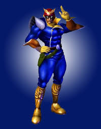
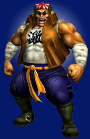
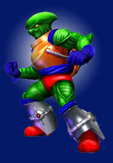
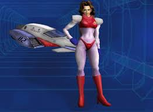
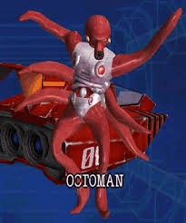

F-ZER0 GX
Vision (Sega) e publicado pela Nintendo para o Nintendo GameCube, conhecido por sua velocidade insana e dificuldade elevada. Lançado originalmente em 2003, é amplamente considerado o melhor título da série F-Zero. O jogo é notável por sua performance técnica, rodando a suaves 60 quadros por segundo e apresentando gráficos impressionantes para a época, mesmo no modo multijogador em tela dividida para até quatro jogadores. A jogabilidade exige precisão e reflexos rápidos, com pistas cheias de perigos como espirais verticais, minas e campos magnéticos. O jogo proporciona uma sensação de velocidade absurda e inigualável, o que contribui para a intensidade das corridas. A barra de energia do veículo funciona tanto como saúde quanto como fonte de impulso (boost). Usar o impulso aumenta a velocidade, mas drena a energia, criando uma tensão constante entre o risco e o controle. Jogadores experientes podem ajustar as estatísticas de suas máquinas para impactar o manejo na pista, e há um sistema de construção de naves personalizadas com peças desbloqueáveis. O jogo é notoriamente difícil, até mesmo na dificuldade "fácil", exigindo conhecimento das pistas e técnicas avançadas para vencer.
Personagens:
Captain Falcon:Capitão Falcon em F-Zero GX é o protagonista audacioso e caçador de recompensas que pilota a máquina Blue Falcon. No Modo História, ele assume um papel heroico, salvando Jody Summer, enfrentando Black Shadow e derrotando Deathborn. Reconhecido por sua coragem e carisma, ele é um piloto de elite que busca desafios e é grato aos seus fãs.
Samurai Goroh:Samurai Goroh apresenta-se como um caçador de recompensas, mas, na verdade, é o líder de um notório grupo de bandidos intergalácticos que se esconde em Red Canyon. Ele nutre uma grande amargura e rivalidade em relação ao Capitão Falcon porque Falcon sempre parece superá-lo nas caças às recompensas mais lucrativas. Sua motivação principal para entrar no Grand Prix F-Zero é, invariavelmente, derrotar seu arqui-rival. No modo História de F-Zero GX, Goroh é o foco do Capítulo 2, intitulado "Goroh: O Samurai Vingativo". Nesta missão, o jogador (controlando o Capitão Falcon) deve vencê-lo em uma corrida ponto a ponto através do Red Canyon. Durante uma cutscene do jogo, Goroh, apesar de sua aparência corpulenta, demonstra uma agilidade atlética surpreendente, realizando múltiplos backflips consecutivos.
Pico:Pico é um dos quatro pilotos originais da série, introduzido no manual de instruções do primeiro F-Zero em 1990. Ele é um ex-membro das forças especiais do exército de Poripoto e trabalha como um assassino de aluguel notório. Pico pilota a máquina nº 06, a Wild Goose, conhecida por sua alta durabilidade, o que complementa seu estilo de direção agressivo e perigoso. No modo de entrevista do jogo, Pico menciona que, se vencer o Grande Prêmio, usará o prêmio em dinheiro para patrocinar a "Copa Pico", descrita como a corrida mais emocionante da história de F-Zero.
Dr. Stewart:Dr. Stewart é um homem calmo, carismático e de bom coração, que valoriza a honra e a integridade. Ele entrou no circuito F-Zero após a morte de seu pai, Professor Kevin Stewart, um cientista que projetou a Golden Fox. Embora tenha seguido uma carreira de elite como médico, ele pilota a máquina de seu falecido pai, em parte, para provar as teorias dele e pela emoção das corridas. Quatro anos antes dos eventos de F-Zero GX, durante um grande acidente na corrida, Dr. Stewart usou suas habilidades médicas como paramédico para tratar muitos dos feridos, garantindo milagrosamente que nenhuma vida fosse perdida. A máquina de Dr. Stewart, a Golden Fox, é conhecida por exigir um alto grau de habilidade técnica do piloto. ossui excelente aceleração, mas uma aderência (grip) notoriamente ruim, tornando-a ideal para pilotos que dominam a técnica de drift em curvas. Devido à sua aceleração e características, a máquina se destaca em circuitos curtos e técnicos, onde erros são menos punitivos, mas sofre em pistas longas com pouca área de recuperação de energia devido à sua baixa velocidade máxima e impulso médio.

Jody Summer: Jody Summer é uma piloto de combate da Federação Espacial Galáctica e uma das pilotos de destaque na série de jogos F-Zero, incluindo F-Zero GX. Ela pilota a máquina White Cat e é conhecida por sua habilidade excepcional de controlar a velocidade, apesar de sua relativa inexperiência em corridas de F-Zero. Jody Summer é uma talentosa piloto de caça da Federação Espacial Galáctica, reconhecida como uma heroína por seus colegas e superiores. Ela foi escolhida como porta-voz da Federação e participa do Grand Prix de F-Zero com o objetivo de prender os criminosos envolvidos nas corridas. Ela pilota a White Cat (Nº 02). A máquina é leve, tem excelente tração e dirigibilidade (classificação C-C-A em F-Zero GX), o que a torna uma boa escolha para pilotos iniciantes que desejam focar na trajetória da pista. Jody aparece no modo história do jogo, especificamente no Capítulo 5, onde ela se envolve em um acidente causado por Black Shadow. Ela é resgatada pelo Capitão Falcon de uma usina de energia prestes a explodir. Ela compete frequentemente com John Tanaka, que assumiu a responsabilidade de protegê-la, embora Jody prefira que ele a deixe em paz. Há especulações e dicas nos vídeos desbloqueáveis de GX sobre um possível interesse romântico da parte dela pelo Capitão Falcon, mas isso não é explicitamente confirmado na continuidade principal dos jogos.
Octoman: Octoman é um piloto do jogo de corrida futurista F-ZERO GX. Atualmente, o jogo para Nintendo GameCube está disponível em varejistas online, mas produtos específicos do personagem Octoman, como bonecos, são itens de colecionador mais difíceis de encontrar e geralmente exigem a compra de itens artesanais ou de segunda mão em mercados específicos. Octoman pilota o Deep Claw, máquina de número #08. O nome da máquina e do piloto fazem referência ao fato de ele ser um polvo (do grego "octo" para oito, e "tako" em japonês), que possuem oito tentáculos. Ele é um representante do planeta Takora, que está em conflito com a Federação Espacial da Via Láctea. Sua motivação para participar do Grande Prêmio F-Zero é usar o prêmio em dinheiro para custear a educação de seus 30 filhos e ajudar a economia de seu planeta natal.
Tutorial:
Para zerar o F-ZERO GX, é necessário vencer as ligas (Knight, Queen, King) no modo Grand Prix, completar o Modo História (9 capítulos) e desbloquear conteúdos ocultos como a Copa AX e o modo Master. O jogo é conhecido pela alta dificuldade, exigindo maestria na pilotagem, controle da energia (Shield) e uso estratégico de turbos.
Passo a Passo:
-Modo Grand Prix (GP): Vença as ligas Knight, Queen e King no modo Standard ou Expert. Completar o modo Expert desbloqueia o difícil nível "Master".
-Modo História: Complete os nove capítulos. Inicialmente, apenas o Capítulo 1 está disponível. Use "tickets" ganhos no GP para comprar os próximos capítulos na "F-Zero Shop".
-Conteúdo Oculto: Vencer o modo Master desbloqueia a Copa AX e pistas extras.
Pilotagem:
1-Curvas: Utilize os botões de ombro (L/R) para fazer curvas fechadas sem frear muito, ou tire o pé do acelerador em curvas muito apertadas.
2-Turbo: Use o turbo apenas a partir da segunda volta para maximizar a velocidade sem perder muita energia.
3-Configuração: Para os capítulos 6 e 8 do modo história, use 100% de aceleração.
Energia (Shield): Evite bater nas paredes; se o escudo zerar, você explode e perde a corrida.
Vídeo: